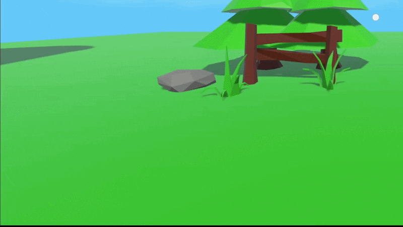
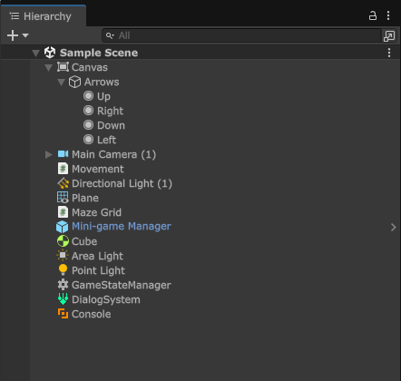

Utility & Tools

This is my personal library of useful tools and utilities that I have created over the years. It includes a variety of scripts, plugins, and other resources that can help streamline development processes and enhance productivity. The tools are designed to be versatile and adaptable to different projects.
Release date: None
Role: Programmer
Time frame: Ongoing
Team size: 1
Unity (C#)
- Console
- First Person Controller
- Hierarchy Icon Display
- Feedback System
One feature I've often missed when working in Unity is an in-game console for executing commands and displaying results. To address this, I implemented a console system that can also log warnings and errors, making it easier to debug issues in built versions of the game.
The console is designed to be simple to use and easy to extend. New commands can be
added by implementing the IConsoleCommand interface, which exposes properties such as name and
description, along with an execute function and optional presets for predefined arguments. This makes it
straightforward to quickly add new functionality without modifying the core system.

To improve usability, the console includes features such as auto-complete, helping users quickly find and execute commands as they type. It also supports command history, allowing users to navigate through previously entered commands using the up and down arrow keys.
A custom editor plugin that displays icons in the Hierarchy window, providing quick visual cues about objects and their types. This improves both readability and navigation, making it easier to quickly locate specific objects while also enhancing the overall look of the editor.
The system is based on a priority list, where the highest-priority component on an object determines which icon is displayed. The priority order is as follows:
- Custom Scripts
- UI
- Rendering
- Physics
- Animation
- Input
- Effects
- Networking
- AI
- Other
- Transform

Only the highest priority component attached to an object is used to determine its icon. An alternative approach would be to display the icon of the first component on the object (excluding the Transform component if others are present). This could reduce manual setup, which is currently the main drawback of the system. At the moment, custom scripts need to be manually assigned to the “Custom Scripts” category, requiring additional effort to locate and organize them within the priority list. This is something that i want to address in the future.
A system for collecting and sending user feedback via email. Players can optionally include a screenshot, which they can draw on to provide additional context. The system also automatically attaches the player log, removing the need for users to locate and include it manually.
Due to limitations with Google's email services, messages can only be sent from an account you control, so the email and password is hardcoded in to the project. To address this, a dedicated throwaway email account is used. This minimizes risk, as it prevents exposure of any primary or sensitive accounts. If the account were ever compromised, it can simply be discarded without any significant impact. As an alternative, a dedicated server can be used to handle the creation and sending of emails, providing a more secure and controlled solution.
A collection of miscellaneous tools and utilities that are too small for their own section.
A bootstrapper (aka. Single Entry Point) is a system that initializes the application and sets up the basic infrastructure. This is useful for games that have multiple scenes and have overarching systems that should always be available.
An input system built on Unity's new Input System. It uses C# events to handle input callbacks and supports every kind of input functionality. Each input is encapsulated in a struct, making it easy to extend and integrate new inputs into the system.
A custom scene loading system that supports asynchronous loading and unloading. The system loads a scene into a specific category. (Gameplay, UI, etc.)
A liquid shader that reacts to the orientation of the object.
A tool for remapping keyboard shortcuts in Unity. It's meant to be a simple drag and drop solution.